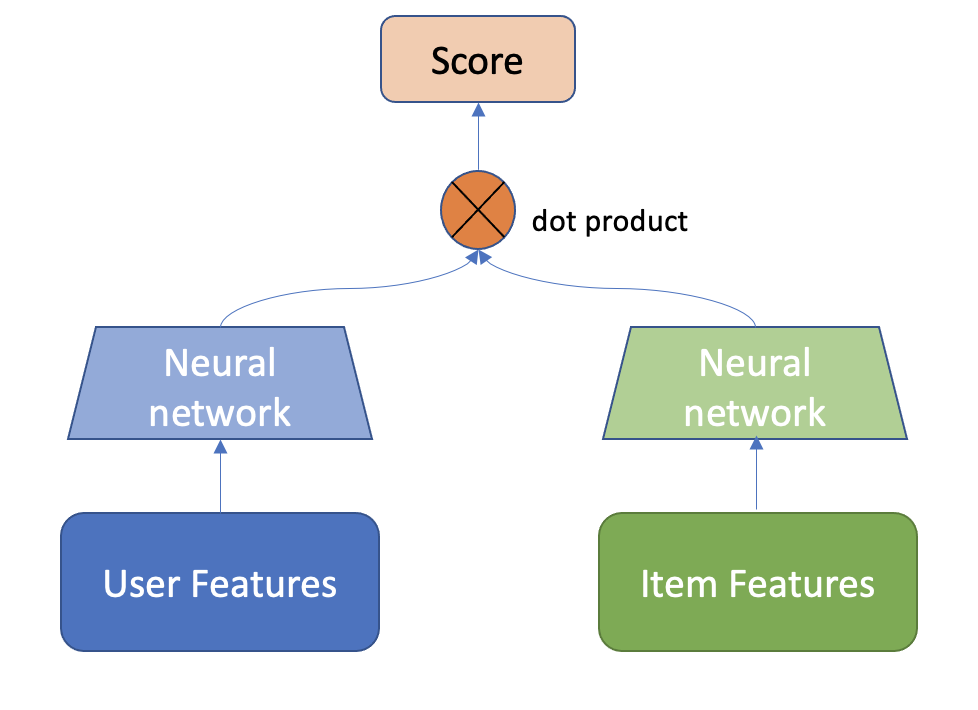

# Copyright 2021 NVIDIA Corporation. All Rights Reserved.
#
# Licensed under the Apache License, Version 2.0 (the "License");
# you may not use this file except in compliance with the License.
# You may obtain a copy of the License at
#
# http://www.apache.org/licenses/LICENSE-2.0
#
# Unless required by applicable law or agreed to in writing, software
# distributed under the License is distributed on an "AS IS" BASIS,
# WITHOUT WARRANTIES OR CONDITIONS OF ANY KIND, either express or implied.
# See the License for the specific language governing permissions and
# limitations under the License.
# ================================
Building a Retrieval Model with Merlin Models#
This notebook is created using the latest stable merlin-tensorflow container.
In large scale recommender systems pipelines, the size of the item catalog (number of unique items) might be in the order of millions. At such scale, a typical setup is having two-stage pipeline, where a faster candidate retrieval model quickly extracts thousands of relevant items and a then a more powerful ranking model (i.e. with more features and more powerful architecture) ranks the top-k items that are going to be displayed to the user. For ML-based candidate retrieval model, as it needs to quickly score millions of items for a given user, a popular choices are models that can produce recommendation scores by just computing the dot product the user embeddings and item embeddings. Popular choices of such models are Matrix Factorization, which learns low-rank user and item embeddings, and the Two-Tower architecture, which is a neural network with two MLP towers where both user and item features are fed to generate user and item embeddings in the output.
Dataset#
In this notebook, we are building a Two-Tower model for Item Retrieval task using synthetic datasets that are mimicking the real Ali-CCP: Alibaba Click and Conversion Prediction dataset.
Learning objectives#
Preparing the data with NVTabular
Training and evaluating Two-Tower model with Merlin Models
Exporting the model for deployment
Importing Libraries#
import os
import nvtabular as nvt
from nvtabular.ops import *
from merlin.models.utils.example_utils import workflow_fit_transform
from merlin.schema.tags import Tags
import merlin.models.tf as mm
from merlin.io.dataset import Dataset
import tensorflow as tf
2022-10-19 17:29:47.304225: I tensorflow/core/util/util.cc:169] oneDNN custom operations are on. You may see slightly different numerical results due to floating-point round-off errors from different computation orders. To turn them off, set the environment variable `TF_ENABLE_ONEDNN_OPTS=0`.
2022-10-19 17:29:48.706986: W tensorflow/stream_executor/platform/default/dso_loader.cc:64] Could not load dynamic library 'libcudnn.so.8'; dlerror: libcudnn.so.8: cannot open shared object file: No such file or directory
2022-10-19 17:29:48.707008: W tensorflow/core/common_runtime/gpu/gpu_device.cc:1850] Cannot dlopen some GPU libraries. Please make sure the missing libraries mentioned above are installed properly if you would like to use GPU. Follow the guide at https://www.tensorflow.org/install/gpu for how to download and setup the required libraries for your platform.
Skipping registering GPU devices...
2022-10-19 17:29:48.739806: I tensorflow/core/platform/cpu_feature_guard.cc:193] This TensorFlow binary is optimized with oneAPI Deep Neural Network Library (oneDNN) to use the following CPU instructions in performance-critical operations: AVX2 AVX512F AVX512_VNNI FMA
To enable them in other operations, rebuild TensorFlow with the appropriate compiler flags.
# disable INFO and DEBUG logging everywhere
import logging
logging.disable(logging.WARNING)
Feature Engineering with NVTabular#
Let’s generate synthetic train and validation dataset objects.
from merlin.datasets.synthetic import generate_data
DATA_FOLDER = os.environ.get("DATA_FOLDER", "/workspace/data/")
NUM_ROWS = os.environ.get("NUM_ROWS", 1000000)
SYNTHETIC_DATA = eval(os.environ.get("SYNTHETIC_DATA", "True"))
if SYNTHETIC_DATA:
train, valid = generate_data("aliccp-raw", int(NUM_ROWS), set_sizes=(0.7, 0.3))
else:
train = nvt.Dataset(DATA_FOLDER + "/train/*.parquet")
valid = nvt.Dataset(DATA_FOLDER + "/valid/*.parquet")
/home/alaiacano/.pyenv/versions/3.8.10/envs/merlin38/lib/python3.8/site-packages/merlin/schema/tags.py:148: UserWarning: Compound tags like Tags.USER_ID have been deprecated and will be removed in a future version. Please use the atomic versions of these tags, like [<Tags.USER: 'user'>, <Tags.ID: 'id'>].
warnings.warn(
/home/alaiacano/.pyenv/versions/3.8.10/envs/merlin38/lib/python3.8/site-packages/merlin/schema/tags.py:148: UserWarning: Compound tags like Tags.ITEM_ID have been deprecated and will be removed in a future version. Please use the atomic versions of these tags, like [<Tags.ITEM: 'item'>, <Tags.ID: 'id'>].
warnings.warn(
/home/alaiacano/.pyenv/versions/3.8.10/envs/merlin38/lib/python3.8/site-packages/merlin/io/dataset.py:251: UserWarning: Initializing an NVTabular Dataset in CPU mode.This is an experimental feature with extremely limited support!
warnings.warn(
# define output path for the processed parquet files
output_path = os.path.join(DATA_FOLDER, "processed")
We keep only positive interactions where clicks==1 in the dataset with Filter() op.
category_temp_directory = os.path.join(DATA_FOLDER, "categories")
user_id = ["user_id"] >> Categorify(out_path=category_temp_directory) >> TagAsUserID()
item_id = ["item_id"] >> Categorify(out_path=category_temp_directory) >> TagAsItemID()
item_features = ["item_category", "item_shop", "item_brand"] >> Categorify(out_path=category_temp_directory) >> TagAsItemFeatures()
user_features = (
[
"user_shops",
"user_profile",
"user_group",
"user_gender",
"user_age",
"user_consumption_2",
"user_is_occupied",
"user_geography",
"user_intentions",
"user_brands",
"user_categories",
]
>> Categorify(out_path=category_temp_directory)
>> TagAsUserFeatures()
)
inputs = user_id + item_id + item_features + user_features + ["click"]
outputs = inputs >> Filter(f=lambda df: df["click"] == 1)
With transform_aliccp function, we can execute fit() and transform() on the raw dataset applying the operators defined in the NVTabular workflow pipeline above. The processed parquet files are saved to output_path.
from merlin.datasets.ecommerce import transform_aliccp
transform_aliccp((train, valid), output_path, nvt_workflow=outputs)
/home/alaiacano/.pyenv/versions/3.8.10/envs/merlin38/lib/python3.8/site-packages/merlin/schema/tags.py:148: UserWarning: Compound tags like Tags.USER_ID have been deprecated and will be removed in a future version. Please use the atomic versions of these tags, like [<Tags.USER: 'user'>, <Tags.ID: 'id'>].
warnings.warn(
/home/alaiacano/.pyenv/versions/3.8.10/envs/merlin38/lib/python3.8/site-packages/merlin/io/dataset.py:251: UserWarning: Initializing an NVTabular Dataset in CPU mode.This is an experimental feature with extremely limited support!
warnings.warn(
/home/alaiacano/.pyenv/versions/3.8.10/envs/merlin38/lib/python3.8/site-packages/merlin/schema/tags.py:148: UserWarning: Compound tags like Tags.USER_ID have been deprecated and will be removed in a future version. Please use the atomic versions of these tags, like [<Tags.USER: 'user'>, <Tags.ID: 'id'>].
warnings.warn(
/home/alaiacano/.pyenv/versions/3.8.10/envs/merlin38/lib/python3.8/site-packages/merlin/schema/tags.py:148: UserWarning: Compound tags like Tags.ITEM_ID have been deprecated and will be removed in a future version. Please use the atomic versions of these tags, like [<Tags.ITEM: 'item'>, <Tags.ID: 'id'>].
warnings.warn(
Building a Two-Tower Model with Merlin Models#
We will use Two-Tower Model for item retrieval task. Real-world large scale recommender systems have hundreds of millions of items (products) and users. Thus, these systems often composed of two stages: candidate generation (retrieval) and ranking (scoring the retrieved items). At candidate generation step, a subset of relevant items from large item corpus is retrieved. You can read more about two stage Recommender Systems here. In this example, we’re going to focus on the retrieval stage.
A Two-Tower Model consists of item (candidate) and user (query) encoder towers. With two towers, the model can learn representations (embeddings) for queries and candidates separately.
{kind=link}
Image Adapted from: Off-policy Learning in Two-stage Recommender Systems
We use the schema object to define our model.
output_path
'workspace/data/processed'
train = Dataset(os.path.join(output_path, "train", "*.parquet"))
valid = Dataset(os.path.join(output_path, "valid", "*.parquet"))
Select features with user and item tags, and be sure to exclude target column.
schema = train.schema.select_by_tag([Tags.ITEM_ID, Tags.USER_ID, Tags.ITEM, Tags.USER])
train.schema = schema
valid.schema = schema
We can print out the feature column names.
schema.column_names
['user_id',
'item_id',
'item_category',
'item_shop',
'item_brand',
'user_shops',
'user_profile',
'user_group',
'user_gender',
'user_age',
'user_consumption_2',
'user_is_occupied',
'user_geography',
'user_intentions',
'user_brands',
'user_categories']
We expect the label names to be empty.
label_names = schema.select_by_tag(Tags.TARGET).column_names
label_names
[]
Negative sampling#
Many datasets for recommender systems contain implicit feedback with logs of user interactions like clicks, add-to-cart, purchases, music listening events, rather than explicit ratings that reflects user preferences over items. To be able to learn from implicit feedback, we use the general (and naive) assumption that the interacted items are more relevant for the user than the non-interacted ones. In Merlin Models we provide some scalable negative sampling algorithms for the Item Retrieval Task. In particular, we use in this example the in-batch sampling algorithm which uses the items interacted by other users as negatives within the same mini-batch.
Building the Model#
Now, let’s build our Two-Tower model. In a nutshell, we aggregate all user features to feed in user tower and feed the item features to the item tower. Then we compute the positive score by multiplying the user embedding with the item embedding and sample negative items (read more about negative sampling here and here), whose item embeddings are also multiplied by the user embedding. Then we apply the loss function on top of the positive and negative scores.
model = mm.TwoTowerModel(
schema,
query_tower=mm.MLPBlock([128, 64], no_activation_last_layer=True),
samplers=[mm.InBatchSampler()],
embedding_options=mm.EmbeddingOptions(infer_embedding_sizes=True),
)
Let’s explain the parameters in the TwoTowerModel():
no_activation_last_layer: when set True, no activation is used for top hidden layer. Learn more here.
infer_embedding_sizes: when set True, automatically defines the embedding dimension from the feature cardinality in the schema
Metrics:
The following information retrieval metrics are used to compute the Top-10 accuracy of recommendation lists containing all items:
Normalized Discounted Cumulative Gain (NDCG@10): NDCG accounts for rank of the relevant item in the recommendation list and is a more fine-grained metric than HR, which only verifies whether the relevant item is among the top-k items.
Recall@10: Also known as HitRate@n when there is only one relevant item in the recommendation list. Recall just verifies whether the relevant item is among the top-n items.
We need to initialize the dataloaders.
model.compile(optimizer="adam", run_eagerly=False, metrics=[mm.RecallAt(10), mm.NDCGAt(10)])
model.fit(train, validation_data=valid, batch_size=4096, epochs=3)
Epoch 1/3
86/86 [==============================] - 18s 135ms/step - loss: 8.2951 - recall_at_10: 0.0223 - ndcg_at_10: 0.0182 - regularization_loss: 0.0000e+00 - val_loss: 8.2900 - val_recall_at_10: 0.0308 - val_ndcg_at_10: 0.0305 - val_regularization_loss: 0.0000e+00
Epoch 2/3
86/86 [==============================] - 11s 124ms/step - loss: 8.2947 - recall_at_10: 0.0301 - ndcg_at_10: 0.0298 - regularization_loss: 0.0000e+00 - val_loss: 8.2903 - val_recall_at_10: 0.0215 - val_ndcg_at_10: 0.0201 - val_regularization_loss: 0.0000e+00
Epoch 3/3
86/86 [==============================] - 11s 123ms/step - loss: 8.2937 - recall_at_10: 0.0212 - ndcg_at_10: 0.0192 - regularization_loss: 0.0000e+00 - val_loss: 8.2913 - val_recall_at_10: 0.0137 - val_ndcg_at_10: 0.0109 - val_regularization_loss: 0.0000e+00
<keras.callbacks.History at 0x7f6c3f7c4880>
Exporting Retrieval Models#
So far we have trained and evaluated our Retrieval model. Now, the next step is to deploy our model and generate top-K recommendations given a user (query). We can efficiently serve our model by indexing the trained item embeddings into an Approximate Nearest Neighbors (ANN) engine. Basically, for a given user query vector, that is generated passing the user features into user tower of retrieval model, we do an ANN search query to find the ids of nearby item vectors, and at serve time, we score user embeddings over all indexed top-K item embeddings within the ANN engine.
In doing so, we need to export
user (query) tower
item and user features
item embeddings
Save User (query) tower#
We are able to save the user tower model as a TF model to disk. The user tower model is needed to generate a user embedding vector when a user feature vector x is fed into that model.
query_tower = model.retrieval_block.query_block()
query_tower.save(os.path.join(DATA_FOLDER, "query_tower"))
Extract and save User features#
With unique_rows_by_features utility function we can easily extract both unique user and item features tables as cuDF dataframes. Note that for user features table, we use USER and USER_ID tags.
from merlin.models.utils.dataset import unique_rows_by_features
user_features = (
unique_rows_by_features(train, Tags.USER, Tags.USER_ID).compute().reset_index(drop=True)
)
/home/alaiacano/.pyenv/versions/3.8.10/envs/merlin38/lib/python3.8/site-packages/merlin/io/dataset.py:251: UserWarning: Initializing an NVTabular Dataset in CPU mode.This is an experimental feature with extremely limited support!
warnings.warn(
user_features.head()
| user_id | user_shops | user_profile | user_group | user_gender | user_age | user_consumption_2 | user_is_occupied | user_geography | user_intentions | user_brands | user_categories | |
|---|---|---|---|---|---|---|---|---|---|---|---|---|
| 0 | 1 | 1 | 1 | 1 | 1 | 1 | 1 | 1 | 1 | 1 | 1 | 1 |
| 1 | 4 | 4 | 1 | 1 | 1 | 1 | 1 | 1 | 1 | 4 | 4 | 4 |
| 2 | 14 | 14 | 1 | 1 | 1 | 1 | 1 | 1 | 1 | 14 | 14 | 14 |
| 3 | 52 | 52 | 2 | 1 | 1 | 1 | 1 | 1 | 1 | 52 | 52 | 52 |
| 4 | 5 | 5 | 1 | 1 | 1 | 1 | 1 | 1 | 1 | 5 | 5 | 5 |
user_features.shape
(673, 12)
# save to disk
user_features.to_parquet(os.path.join(DATA_FOLDER, "user_features.parquet"))
Extract and save Item features#
item_features = (
unique_rows_by_features(train, Tags.ITEM, Tags.ITEM_ID).compute().reset_index(drop=True)
)
/home/alaiacano/.pyenv/versions/3.8.10/envs/merlin38/lib/python3.8/site-packages/merlin/io/dataset.py:251: UserWarning: Initializing an NVTabular Dataset in CPU mode.This is an experimental feature with extremely limited support!
warnings.warn(
item_features.head()
| item_id | item_category | item_shop | item_brand | |
|---|---|---|---|---|
| 0 | 30 | 30 | 30 | 30 |
| 1 | 27 | 27 | 27 | 27 |
| 2 | 15 | 15 | 15 | 15 |
| 3 | 6 | 6 | 6 | 6 |
| 4 | 5 | 5 | 5 | 5 |
# save to disk
item_features.to_parquet(os.path.join(DATA_FOLDER, "item_features.parquet"))
Extract and save Item embeddings#
item_embs = model.item_embeddings(Dataset(item_features, schema=schema), batch_size=1024)
item_embs_df = item_embs.compute(scheduler="synchronous")
/home/alaiacano/.pyenv/versions/3.8.10/envs/merlin38/lib/python3.8/site-packages/merlin/io/dataset.py:251: UserWarning: Initializing an NVTabular Dataset in CPU mode.This is an experimental feature with extremely limited support!
warnings.warn(
/home/alaiacano/.pyenv/versions/3.8.10/envs/merlin38/lib/python3.8/site-packages/merlin/io/dataset.py:251: UserWarning: Initializing an NVTabular Dataset in CPU mode.This is an experimental feature with extremely limited support!
warnings.warn(
/home/alaiacano/.pyenv/versions/3.8.10/envs/merlin38/lib/python3.8/site-packages/merlin/schema/tags.py:148: UserWarning: Compound tags like Tags.ITEM_ID have been deprecated and will be removed in a future version. Please use the atomic versions of these tags, like [<Tags.ITEM: 'item'>, <Tags.ID: 'id'>].
warnings.warn(
item_embs_df
| item_id | item_category | item_shop | item_brand | 0 | 1 | 2 | 3 | 4 | 5 | ... | 54 | 55 | 56 | 57 | 58 | 59 | 60 | 61 | 62 | 63 | |
|---|---|---|---|---|---|---|---|---|---|---|---|---|---|---|---|---|---|---|---|---|---|
| 0 | 30 | 30 | 30 | 30 | 0.013722 | -0.038877 | 0.027160 | -0.056064 | -0.088141 | 0.037771 | ... | -0.002621 | -0.047390 | -0.036058 | 0.040486 | 0.094787 | 0.034536 | -0.020187 | 0.016947 | 0.037674 | -0.054949 |
| 1 | 27 | 27 | 27 | 27 | 0.017832 | 0.000882 | 0.004411 | -0.000135 | -0.045962 | 0.000952 | ... | -0.041442 | -0.057827 | -0.059980 | 0.031100 | 0.032169 | 0.116988 | 0.001392 | 0.100734 | -0.007959 | -0.018133 |
| 2 | 15 | 15 | 15 | 15 | 0.043520 | -0.088271 | 0.005647 | 0.039733 | 0.047905 | -0.018342 | ... | 0.060803 | -0.057762 | 0.009969 | -0.001141 | 0.111599 | 0.048858 | -0.035187 | 0.030356 | -0.069294 | -0.060928 |
| 3 | 6 | 6 | 6 | 6 | 0.016514 | 0.062687 | -0.019989 | -0.072054 | -0.090658 | 0.031691 | ... | 0.065355 | -0.058297 | -0.126050 | -0.066580 | -0.001697 | -0.022819 | 0.023825 | 0.042565 | -0.015717 | -0.043056 |
| 4 | 5 | 5 | 5 | 5 | 0.034221 | -0.018455 | -0.008388 | -0.067058 | -0.078019 | 0.144726 | ... | 0.006008 | 0.012593 | -0.017191 | -0.003372 | -0.016305 | 0.097570 | -0.027198 | -0.005796 | 0.104270 | -0.095587 |
| ... | ... | ... | ... | ... | ... | ... | ... | ... | ... | ... | ... | ... | ... | ... | ... | ... | ... | ... | ... | ... | ... |
| 651 | 592 | 592 | 592 | 592 | 0.034567 | -0.019798 | 0.036869 | 0.006455 | 0.041020 | 0.032228 | ... | -0.066052 | -0.005500 | -0.038382 | -0.046610 | 0.040762 | 0.064137 | 0.032616 | 0.023622 | -0.038059 | 0.005311 |
| 652 | 738 | 738 | 738 | 738 | 0.040859 | -0.010400 | 0.026859 | -0.013399 | -0.074890 | 0.031183 | ... | 0.061172 | -0.042710 | -0.046173 | -0.093668 | 0.030414 | 0.080392 | -0.050578 | 0.011348 | -0.069107 | -0.096119 |
| 653 | 528 | 528 | 528 | 528 | -0.003552 | -0.038933 | 0.008198 | -0.109951 | 0.010384 | 0.003504 | ... | 0.035436 | -0.026332 | 0.011653 | -0.040085 | 0.044650 | 0.023294 | -0.016258 | -0.009846 | 0.039786 | 0.012646 |
| 654 | 550 | 550 | 550 | 550 | 0.081330 | 0.029574 | -0.079281 | -0.054133 | -0.048405 | -0.011560 | ... | 0.052818 | 0.024629 | -0.014590 | -0.066076 | -0.050809 | 0.085821 | -0.064984 | -0.030180 | -0.011900 | -0.093892 |
| 655 | 600 | 600 | 600 | 600 | 0.002396 | -0.044717 | 0.022094 | 0.005330 | 0.030306 | -0.010537 | ... | 0.044282 | -0.069714 | 0.005738 | -0.022341 | 0.022882 | 0.062106 | -0.046273 | 0.110572 | 0.017938 | -0.013358 |
656 rows × 68 columns
# select only embedding columns
item_embeddings = item_embs_df.iloc[:, 4:]
item_embeddings.head()
| 0 | 1 | 2 | 3 | 4 | 5 | 6 | 7 | 8 | 9 | ... | 54 | 55 | 56 | 57 | 58 | 59 | 60 | 61 | 62 | 63 | |
|---|---|---|---|---|---|---|---|---|---|---|---|---|---|---|---|---|---|---|---|---|---|
| 0 | 0.013722 | -0.038877 | 0.027160 | -0.056064 | -0.088141 | 0.037771 | -0.015925 | 0.007615 | -0.041389 | -0.028759 | ... | -0.002621 | -0.047390 | -0.036058 | 0.040486 | 0.094787 | 0.034536 | -0.020187 | 0.016947 | 0.037674 | -0.054949 |
| 1 | 0.017832 | 0.000882 | 0.004411 | -0.000135 | -0.045962 | 0.000952 | -0.051164 | -0.024453 | -0.031280 | -0.057322 | ... | -0.041442 | -0.057827 | -0.059980 | 0.031100 | 0.032169 | 0.116988 | 0.001392 | 0.100734 | -0.007959 | -0.018133 |
| 2 | 0.043520 | -0.088271 | 0.005647 | 0.039733 | 0.047905 | -0.018342 | -0.126344 | -0.119511 | -0.060764 | 0.027011 | ... | 0.060803 | -0.057762 | 0.009969 | -0.001141 | 0.111599 | 0.048858 | -0.035187 | 0.030356 | -0.069294 | -0.060928 |
| 3 | 0.016514 | 0.062687 | -0.019989 | -0.072054 | -0.090658 | 0.031691 | -0.047631 | -0.063941 | -0.046331 | 0.050307 | ... | 0.065355 | -0.058297 | -0.126050 | -0.066580 | -0.001697 | -0.022819 | 0.023825 | 0.042565 | -0.015717 | -0.043056 |
| 4 | 0.034221 | -0.018455 | -0.008388 | -0.067058 | -0.078019 | 0.144726 | -0.026256 | -0.017077 | 0.069507 | 0.046839 | ... | 0.006008 | 0.012593 | -0.017191 | -0.003372 | -0.016305 | 0.097570 | -0.027198 | -0.005796 | 0.104270 | -0.095587 |
5 rows × 64 columns
# save to disk
item_embeddings.to_parquet(os.path.join(DATA_FOLDER, "item_embeddings.parquet"))
That’s it. You have learned how to train and evaluate your Two-Tower retrieval model, and then how to export the required components to be able to deploy this model to generate recommendations. In order to learn more on serving a model to Triton Inference Server, please explore the examples in the Merlin and Merlin Systems repos.